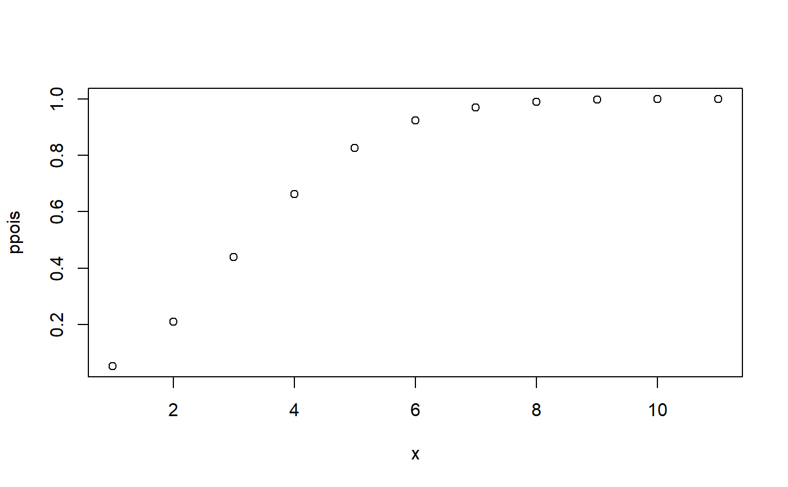
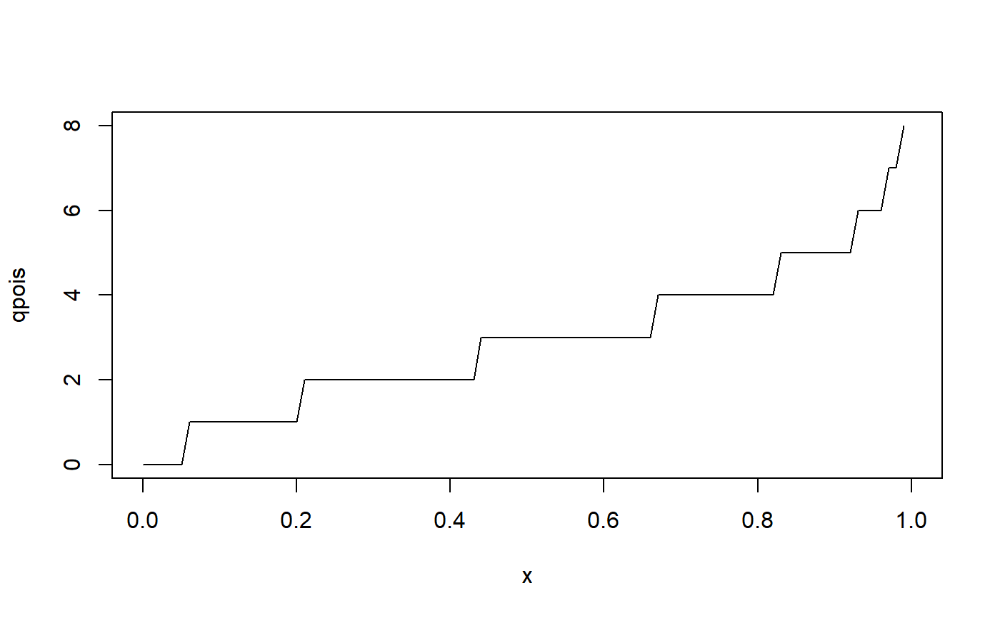
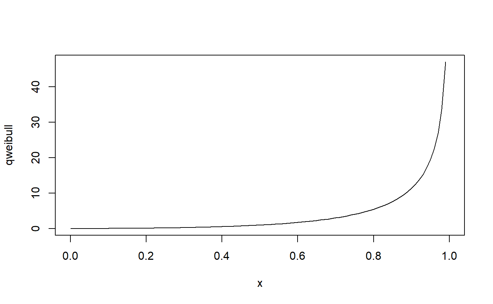

Fit Univariate Distribution
fit_univariate(x, distribution, type = "continuous")numeric vector
character name of distribution
discrete or continuous data
a fitted list object of d, p, q, r distribution functions and parameters, MLE for probability distributions, custom fit for empirical
# Fit Discrete Distribution
set.seed(42)
x <- rpois(1000, 3)
fitted <- fit_univariate(x, 'pois', type = 'discrete')
# density function
plot(fitted$dpois(x=0:10),
xlab = 'x',
ylab = 'dpois')
# distribution function
plot(fitted$ppois(seq(0, 10, 1)),
xlab= 'x',
ylab = 'ppois')

# quantile function
plot(fitted$qpois,
xlab= 'x',
ylab = 'qpois')

# sample from theoretical distribution
summary(fitted$rpois(100))
#> Min. 1st Qu. Median Mean 3rd Qu. Max.
#> 0.00 1.00 3.00 2.75 4.00 10.00
# estimated parameters from MLE
fitted$parameters
#> lambda
#> 2.93
set.seed(24)
x <- rweibull(1000, shape = .5, scale = 2)
fitted <- fit_univariate(x, 'weibull')
# density function
plot(fitted$dweibull,
xlab = 'x',
ylab = 'dweibull')
# distribution function
plot(fitted$pweibull,
xlab = 'x',
ylab = 'pweibull')
# quantile function
plot(fitted$qweibull,
xlab = 'x',
ylab = 'qweibull')

# sample from theoretical distribution
summary(fitted$rweibull(100))
#> Min. 1st Qu. Median Mean 3rd Qu. Max.
#> 0.00001 0.18442 1.18814 4.83963 5.18201 81.99765
# estimated parameters from MLE
fitted$parameters
#> shape scale
#> 0.4879054 2.0564428